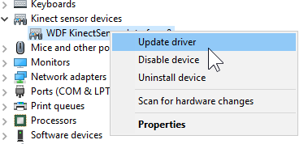

Before trying anything else, you should ensure that your Kinect can be detected properly by the computer. When you plug it in via USB, you should hear the Windows USB connection noise. And see it appear in Device Manager
If you get a USB error sound and a "Device could not be recognized" pop-up, you should check all your cables, and try a different USB port as shown below.
If you don't see this or don't have any USB noise, you might have a broken adapter. I would still recommend if possible that you try it on a different computer, or on an actual Xbox One console to be completely sure.
That said, even if the drivers were broken, Windows would react to a device being plugged in.
You should try using USBTreeView to check your USB controllers and see if there could be a conflict, a good way to test this is to unplug every USB device, then try plugging in just the Kinect and seeing if it appears. USBTreeView will update automatically so you don't need your mouse and keyboard plugged in.
This is what the Xbox One Kinect looks like in USBTreeView
Certain brands of USB controllers are fully incompatible with the Xbox One Kinect, namely VIA, ASMedia (3.0) and Fresco Logic controllers.
If you have a Ryzen-based PC or a modern Intel one with a motherboard that wasn't made by Asus, then you're probably fine.
If you don't have a compatible controller, and you're on a desktop with a free PCIe 1x slot, you can get a USB controller card to plug the Kinect into.
You can purchase a USB controller card with a Renesas controller (720201/720202) by searching on Amazon or other websites for "Renesas USB" or "720201 USB" like here
In a case like this, you most likely want to update the Kinect driver to the one provided by Windows Update by right-clicking the device in Device Manager, and clicking "Update Device".
This will install the Kinect for Windows Runtime v2.2_1905 driver that was released for Windows 10 in 2019. K2EX Installer usually installs v2.0_1409 which was the last version to come with the full SDK, but it may not work for everyone.
There are multiple causes for the Kinect restarting, but if the time between disconnects is higher than about 5 seconds, then it's most likely a hardware issue that can be fixed by disconnecting the temperature sensor from the Kinect.
You will have to take off the back of the Kinect using a Torx T2 screwdriver and then cut the connection from the blue and yellow wires going to the fan. Then cover them up with electrical tape to avoid shorts.
Here's a video demonstrating the process:
A quick bootloop of the Kinect like this can be caused by a number of issues, ranging from software, to hardware, to cable connections.
You should ensure that the Kinect is properly connected at each end. The cable can actually be disconnected from the back of the Kinect itself, so make sure that's also firmly plugged in.
The rebooting can also be caused by a lack of bandwidth, so everything in Section 1 about USB still applies.
If it's still not working, I would recommend joining the Discord for help.